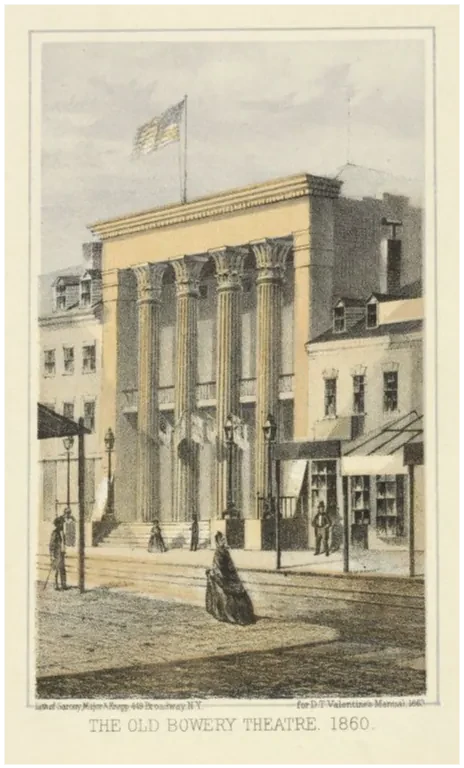
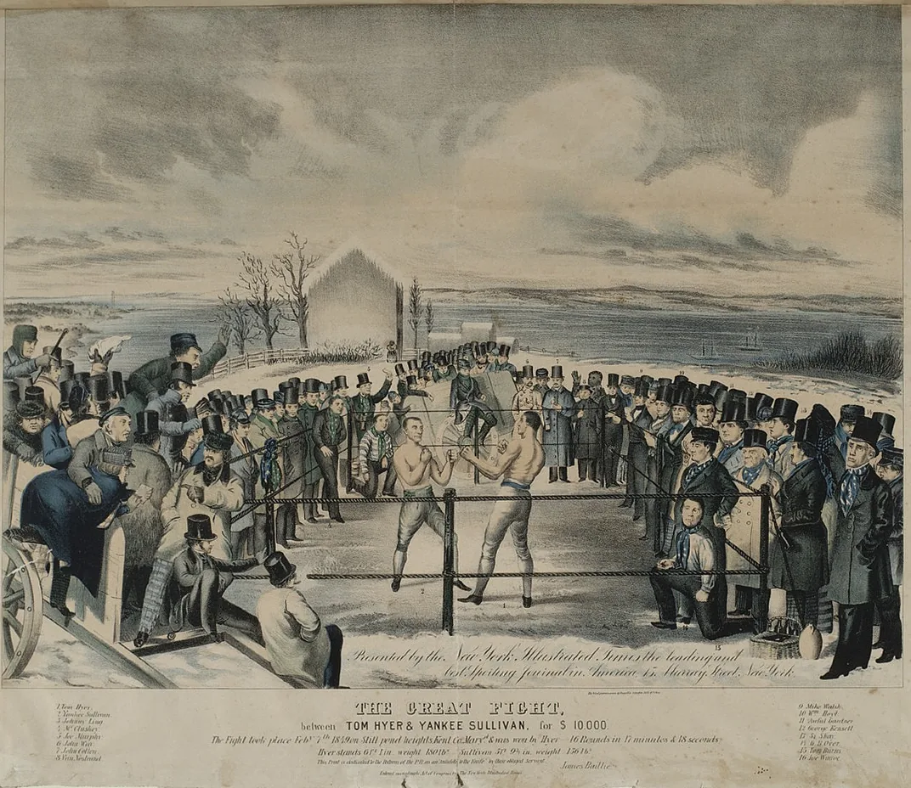
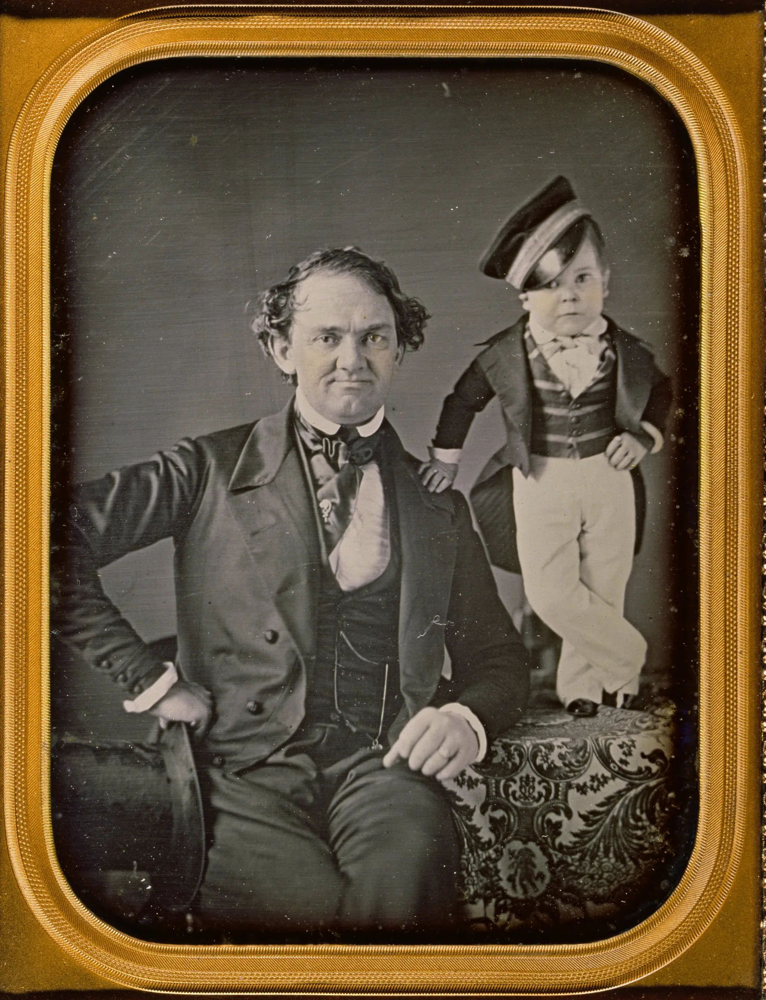

Rough Leisure:
The Working-Class City
The Working-Class City: Conditions
Immigration Wave
- Massive waves of Irish and German immigrants crowd into cities (see Chapter 14)
Working Conditions
- Factory workers: 12–14 hour days, dangerous machinery
- Dockhands: heavy labor, irregular employment
- Day laborers: casual work, no job security
- Low wages, no benefits; child labor common

AI-generated illustration (Google Gemini), not a historical image
The Working-Class City: Conditions (continued)
Living Conditions
- Overcrowding: multiple families per room
- Slums: poor sanitation, disease
- Tenement buildings with no running water
- High mortality rates
The Working-Class City: The Bowery
The Bowery
- Visible working-class culture
- Bowery Theatre: 12¢ tickets (affordable)
- Gangs & swagger: the “Bowery B’hoy” style

AI-generated illustration (Google Gemini), not a historical image

The Working-Class City: Fire Companies
Fire Companies
- Volunteer brigades: civic service + identity
- Ward politics: ties to Democratic machines
- Masculine performance: courage, rivalry

AI-generated illustration (Google Gemini), not a historical image

AI-generated illustration (Google Gemini), not a historical image
The Working-Class City: Five Points
Five Points
- Infamous slum in the middle-class imagination
- Underground amusements: cockfights, dance halls
- Community & survival: families, mutual aid

AI-generated illustration (Google Gemini), not a historical image

AI-generated illustration (Google Gemini), not a historical image
The Hunger for Spectacle
- Urban density creates mass audiences: unprecedented demand for novelty and sensation
- Media saturation: newspapers and posters fill public space; the city becomes a theater
- Performance of identity: where you go and what you see defines who you are
Americans across classes crave spectacle but disagree on what forms are legitimate
Setting the Stage:
The Urban Public Sphere
The City as Theater
Media Turn Streets into Stages
- Playbills and posters: colorful ads plaster walls and buildings
- Newspapers: daily coverage of shows, scandals, sensations
- Street performance: Broadway or the Bowery, performance at every turn
Urban space becomes a place to see and be seen
The city itself is theatrical: everyone is both performer and audience
The Public Sphere Becomes Performative
Traditional Ideal of the Public Sphere
- Rational debate in coffeehouses, salons, newspapers
- Citizens join through reading and reasoned discussion
- Enlightenment model: ideas triumph through logical argument
Structural Transformation: Democracy as Spectacle ℹ️ click for Habermas
From rational debate toward spectacle and display
- Democracy: the right to watch, judge, and participate in public amusements
- Citizens act by seeing and being seen, not just reading and debating
- Identity performed through amusement and physical presence
The Public Sphere Becomes Performative (continued)
New Rules of Citizenship
- Citizenship through spectatorship: attending, watching, judging public entertainment
- Identity through performance: where you go and how you behave there
- Representing “the people”: different venues, different claims about who “the people” are
Public culture becomes contested terrain for representing “the people”
Origins and Rise of Blackface Minstrelsy
What Was Blackface Minstrelsy?
- White performers in burnt-cork makeup performing racist caricatures of Black Americans
- Mocked Black speech, dance, music, and mannerisms
- Emerged in the 1830s–1840s
- The most popular U.S. entertainment of the 19th century (by mid-century)
- Performed across class lines: elite theaters and working-class venues

Historical racist imagery, shown for critical analysis
Origins and Rise of Blackface Minstrelsy (continued)
How It Began
- Thomas D. Rice performs “Jim Crow” (1820s–30s)
- Claimed to imitate Black performers he observed
- Virginia Minstrels (1843): first full minstrel troupe

Historical racist imagery, shown for critical analysis
Origins and Rise of Blackface Minstrelsy (continued)
The Minstrel Show Format
- Part 1: semicircle of songs, jokes, banter (interlocutor & endmen)
- Part 2: the “olio”: variety acts, dancers, novelty pieces
- Part 3: one-act farce or comic skit
Stock Characters
- “Jim Crow” (rural enslaved man, played as a buffoon)
- “Zip Coon” (urban dandy); “Mammy”

.webp "Click to enlarge")
Historical racist imagery, shown for critical analysis
Why Minstrelsy Mattered
Cultural Function
1) United White Audiences Across Class Lines
- Working-class and elite venues
- North and South attended
- Forged a shared “American” culture through racism

AI-generated illustration, not a historical image
Why Minstrelsy Mattered (continued)
2) Cultural Borrowing with Racist Caricature
- White performers adopted Black music, dance, and humor
- Portrayed Black people as inferior, childlike, comic
- Consumed the culture while denying the humanity of its creators

Historical racist imagery, shown for critical analysis
Why Minstrelsy Mattered (continued)
3) Justified Slavery and Racial Hierarchy
- Staged myths of “happy” enslaved people
- Normalized claims of “natural” racial inferiority
- Made racism entertaining, and therefore ordinary

Historical racist imagery, shown for critical analysis
The Central Contradiction of Minstrelsy
Simultaneous Fascination and Dehumanization
- White audiences loved Black music and dance
- But could enjoy it only through racist caricature
- Cultural borrowing combined with dehumanization
What This Reveals About American Culture
- White Americans drawn to Black expressive culture
- But unwilling to treat Black people as equals
- Pattern continues: jazz, blues, rock, hip-hop, borrowed without equal respect
The Central Contradiction of Minstrelsy (continued)
Historical Significance
- First truly national mass entertainment (North + South)
- Template for American variety entertainment (→ vaudeville → Hollywood → TV)
- Shaped American racial imagination for generations
Mass entertainment and racism emerge together in the U.S.
The Ideology of Minstrelsy
Racist Stereotypes
Minstrelsy portrays Black Americans as:
- Childlike, ignorant, lazy
- Happy in slavery
- Incapable of citizenship or self-governance
- Comic, ridiculous, non-threatening
Political Function
Minstrelsy serves to:
- Justify slavery: enslaved people shown as content
- Oppose abolition: mocks Black claims to freedom and equality
- Define whiteness by contrast: white = NOT Black
- Unite white working and middle classes by race
The Ideology of Minstrelsy (continued)
The Paradox of Fascination
White Americans were simultaneously attracted to and repulsed by Blackness
- Desire: Black music, dance, style, expressiveness fascinate white audiences
- Anxiety: the attraction threatens white identity and hierarchy
- “Solution”: whites could “play Black” while keeping racial boundaries
Blood Sports, Boxing,
and Working-Class Masculinity
Blood Sports as Rough Amusement
Types of Blood Sports
- Cockfighting: roosters with metal spurs fight to the death
- Dogfights: pit bulls and terriers in underground rings
- Rat-baiting: dogs kill as many rats as possible in a pit
- Bare-knuckle fights: boxing without gloves, few rules

AI-generated illustration (Google Gemini), not a historical image
Blood Sports as Rough Amusement (continued)
Social Meaning
Working-class masculine sociability and defiance of middle-class restraint
- Held in Five Points and Bowery taverns, cellars, back rooms
- Heavy gambling on outcomes
- Often illegal yet widely practiced
- Entrepreneurs profit despite reformers’ opposition
Sets the stage for the culture of the prize ring
Boxing and the Culture of the Prize Ring
The Sporting Fraternity
- Bare-knuckle prizefighting: illegal, staged in secret venues
- “The fancy” or “sporting men”: a subculture of fight enthusiasts
Who Were the Sporting Men?
A diffuse subculture spanning urban America
- Working-class men: butchers, mechanics, firemen, tavern keepers
- Many ethnic backgrounds, united by sporting culture
- In every major city, New York to New Orleans

Boxing and the Culture of the Prize Ring (continued)
Shared Culture of “The Fancy”
- Sports newspapers: Spirit of the Times and similar
- Tavern gatherings: discussing and planning matches
- Insider slang: vocabulary marking membership
- “Flash” style: distinctive dress and swagger
- Fan identity: following fights, knowing fighters, attending matches
A working-class male counterpublic: an alternative public sphere with its own values and heroes

P. T. Barnum:
The Art of Humbug
Barnum’s American Museum (1841–1865)

AI-generated illustration (Google Gemini), not a historical image
Overview
- Established in 1841
- A five-story museum on Broadway
- An estimated 38 million admissions during its 24-year run
Barnum’s American Museum (1841–1865) (continued)
What Was Inside?
- Natural curiosities: stuffed animals, geological specimens, oddities
- Living “human wonders”: people with unusual physical characteristics
- Theatrical performances: plays, musical acts, variety shows
- Scientific lectures: educational talks (allegedly)
- Elaborate hoaxes: fake mermaids, questionable artifacts
Barnum’s American Museum (1841–1865) (continued)
Hybrid Institution
A unique combination of:
- Moral lecture hall
- Curiosity cabinet
- Theater
- “Freak show”
Cross-Class Appeal
- Broadway location: respectable enough for families
- Low admission (~$0.25): affordable for workers
- Cross-gender appeal: women and children welcomed
- Marketed as educational and moral
Humbug as an Art Form
Famous Hoaxes
- Joice Heth (1835): an enslaved elderly Black woman Barnum exhibited
- Billed as 161 years old and George Washington’s former nurse
- Obviously false, but thousands paid to see her
- Feejee Mermaid (1842): monkey torso sewn to a fish tail
- Presented as authentic, with fake scientific credentials

AI-generated illustration (Google Gemini), not a historical image

AI-generated illustration (Google Gemini), not a historical image
Humbug as an Art Form (continued)
What Is Humbug?
Humbug: a blend of education, fraud, and emotional manipulation
- Not simple deception: audiences know they might be fooled
- The desire to be deceived is part of the pleasure
- A spectacle of belief and doubt, performed publicly
- Value measured by experience, not authenticity
The question isn’t “Is it real?” but “Is it worth my quarter?”
Barnum’s Rhetoric and Politics
Democratic Achievements
- Low prices: culture across class lines
- Broad access: women, children, working class
- Participatory culture: audiences debate and judge
- Meritocracy of pleasure: enjoyment, not refinement, matters
Problematic Aspects
- Exploitation: displays people with disabilities as “freaks”
- Racial mockery: racist stereotypes; exhibited the enslaved Joice Heth
- Deception for profit: capitalizes on gullibility
- Commercialization: everything a commodity
Barnum’s Rhetoric and Politics (continued)
Barnum represents both the promise and the problems of democratic commercial culture
- Democratizes access, but exploits vulnerability
- Empowers audiences, but manipulates them
- Challenges elite culture, but creates new hierarchies of his own
The End
“A little learning is a dangerous thing;
Drink deep, or taste not the Pierian spring.”
— Alexander Pope, An Essay on Criticism (1711)
The Bowery
The Bowery B’hoy
Distinctive working-class masculine identity:
- Flashy dress (loud shirts, soap-locked hair)
- Swagger and aggressive posture
- Loyalty to fire companies and neighborhood
- Rejection of middle-class respectability
- Toughness and street smarts over education

AI-generated illustration (Google Gemini), not a historical image

AI-generated illustration (Google Gemini), not a historical image
Bowery Fire Companies
Social Function of Fire Companies
- Volunteer brigades: essential before professional departments
- Working-class social clubs: male sociability, identity
- Political machines: Democratic ward politics
- Competitive culture: rivalries, sometimes fights
- Masculine performance: courage, loyalty, toughness
AI-generated illustration (Google Gemini), not a historical image
AI-generated illustration (Google Gemini), not a historical image
Five Points
America’s Most Infamous Slum
- Intersection of five streets in Lower Manhattan
- Home to Irish and Black New Yorkers in extreme poverty
- Notorious in middle-class imagination: vice and danger
- Actually: families, churches, mutual aid societies
- Underground economy of entertainment and survival
AI-generated illustration (Google Gemini), not a historical image
AI-generated illustration (Google Gemini), not a historical image